Custom Ti-Bike Part IV — Completion
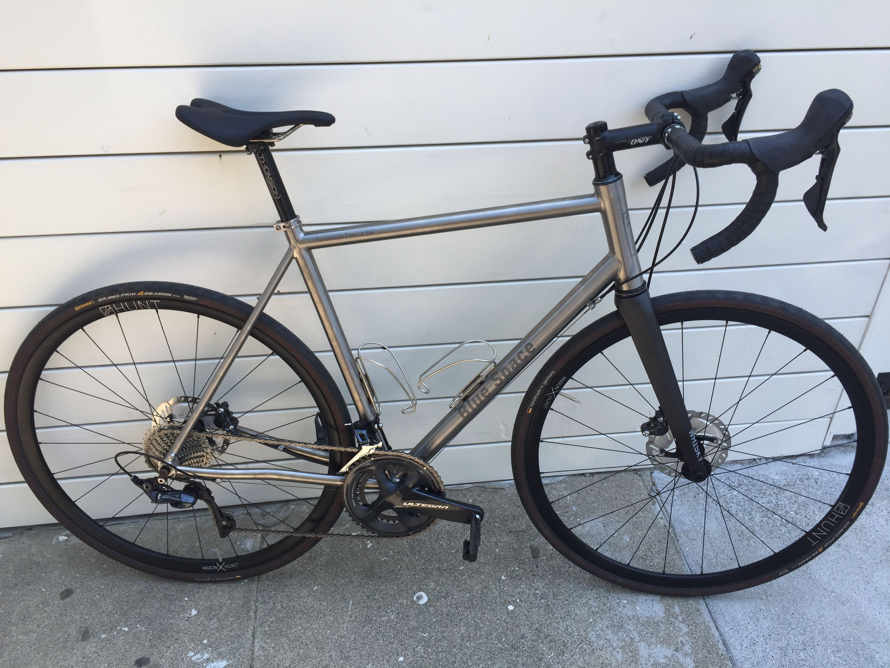
{kind=link}
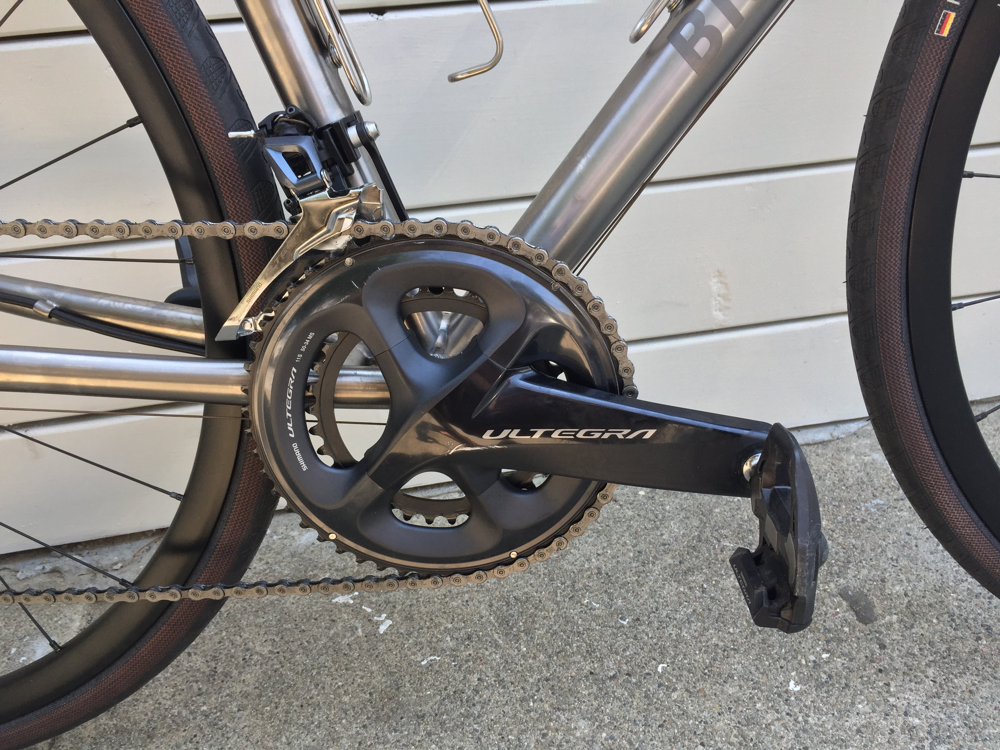
{kind=link}
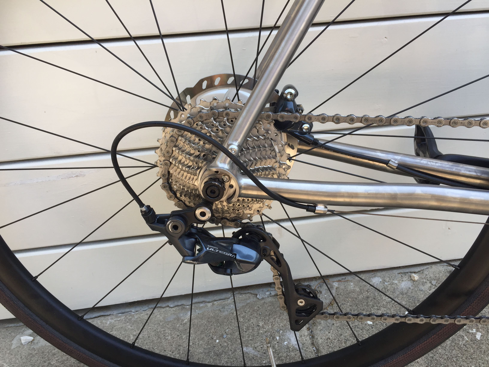
{kind=link}
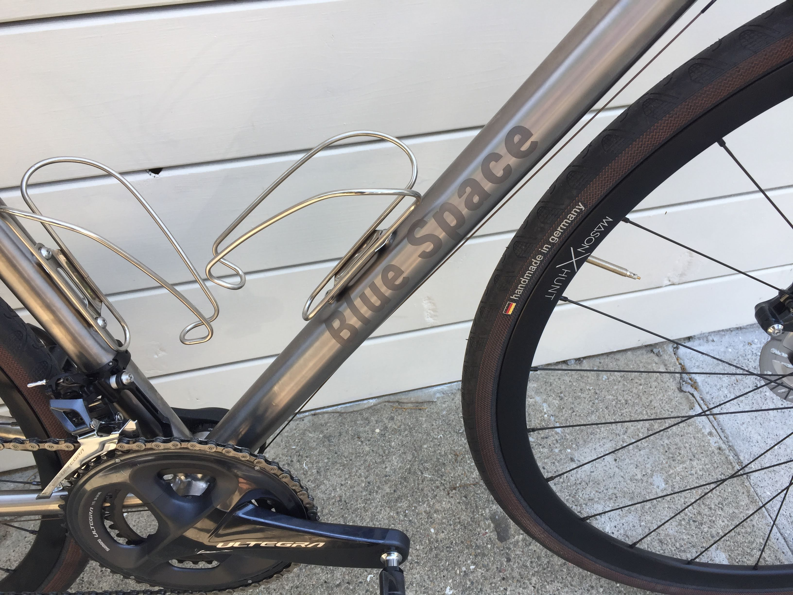
{kind=link}
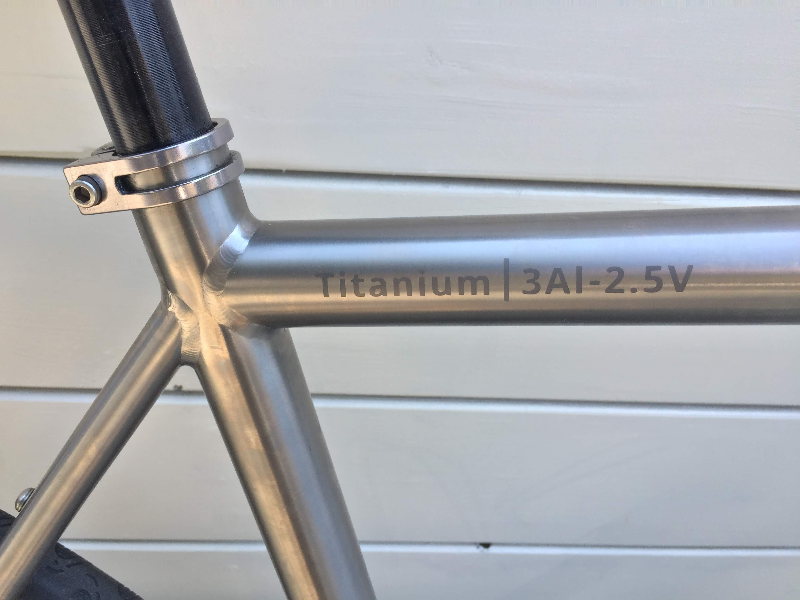
{kind=link}
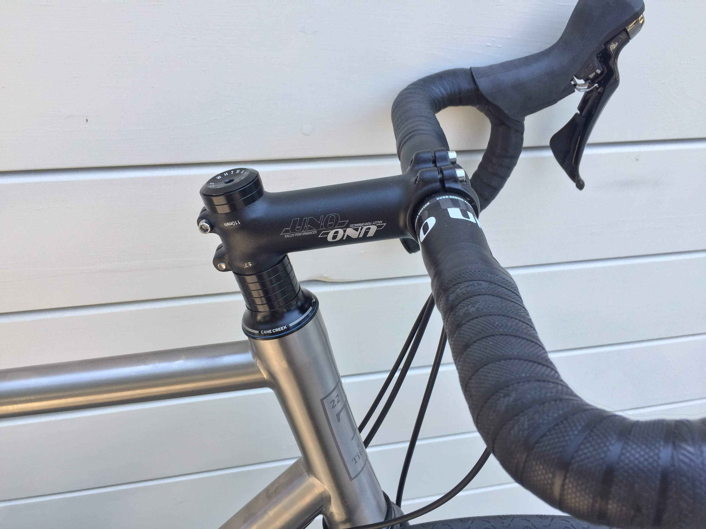
{kind=link}
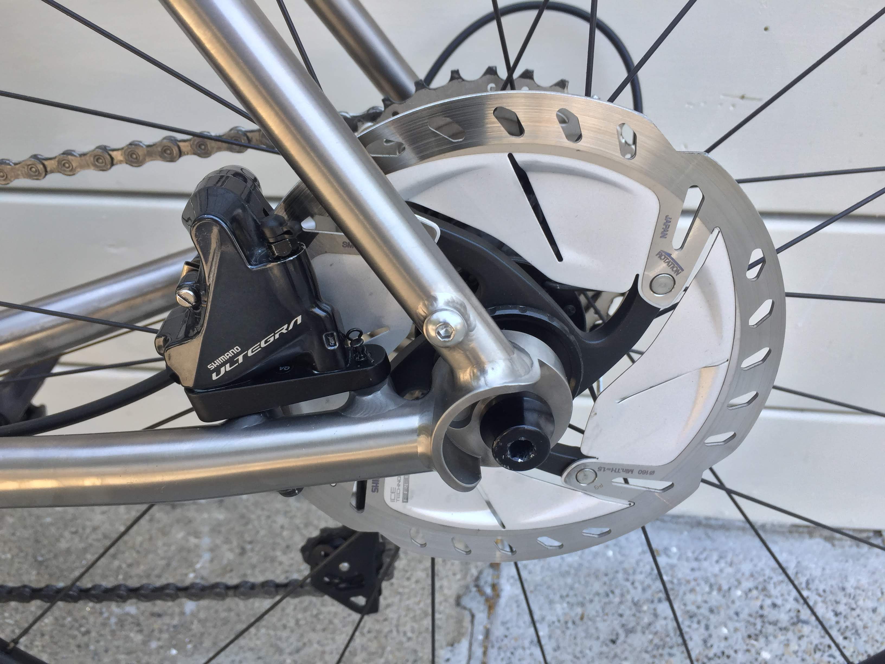
{kind=link}
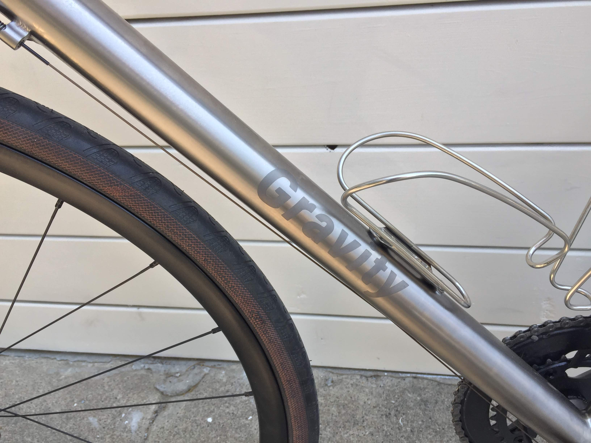
{kind=link}
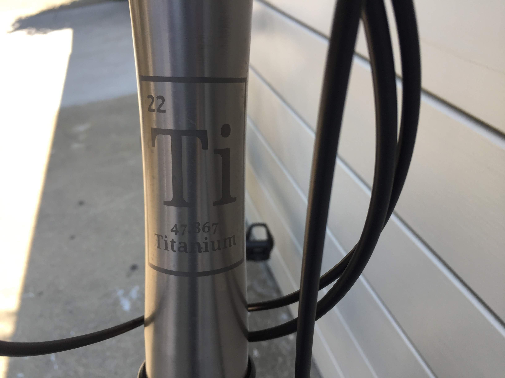
First Ride Impressions
At the end build day 3, I went out for a basic test ride. I wanted to get a sense for fit and ensure all critical systems worked before finalizing some component changes—like cutting down the fork steerer or wrapping the handlebar tape. So I threw on some cheap regular platform pedals (I didn't want to worry about learning how to use clipless lockin pedals yet) and brought her outside to the Mission District.
My immediate impression was: wow this thing is smooth. The derailleur shifting was like butter all the way up and down the 2x11 gears, I wanted to shift gears all day to hear the soft click of the shift lever, followed milliseconds later by a satisfying thunk heard and felt in the back of the bicycle indicating the gear shift completed. And the brakes—even before bleeding them—were hyper responsive. Just slight pressure from one of my fingers was enough to modulate the braking force—anything I wanted from a slight frictional hiss to a sharp and sudden stop. It's sublimely confidence inspiring to have such precise control over the drivetrain. I'm a 100% hydraulic disc brake convert.
Two days later, on my first free Sunday, I took her out past the Golden Gate Bridge to try to climb and descend Hawk Hill. The climb was relatively uneventful, I did really appreciate the lightweight bicycle and low gearing ratio which made the climb significantly easier than any I'd been on before. But it was the descent that was the real test. The Hawk Hill Descent is a long steep and windy 18% decline. At these speeds, a crash would result in a critical injury, if not fatality. So I had to have confidence in my own build skills—bear in mind this was my first bike build ever. Every bolt needs to have been tightened in properly, every component adjusted to millimeter correctness, and most importantly, the brakes needed to be bled correctly (any air or water in the sealed system would heat up and compress, resulting in critical failure in the brakes). I took the calculated risk and went for it, deciding to trust in my attention to detail during the build and shoot down the descent.
That I'm writing this spoils the result—my bicycle held together fine, the descent was the most exhilarating experience of my life. Bombing down Hawk Hill is like grabbing a dragon by its horns, there's this seemingly endless source of power that you're tapping into (gravity). And while you're riding the dragon, you're sneaking quick glances to the left at the view of the ocean cliff—both breathtakingly beautiful and harrowing at the same time. The mix of adrenaline, endorphins, and fear you get is unlike any other experience. You're in control of your own fate, and you're flying.
Further Adjustments
I ended up needing various adjustments to componentry before settling down on a final satisfied build, although I'm honestly never really satisfied and will probably continue upgrading this bicycle throughout my ownership of it.
Seatpost
This was the most critical component I needed to adjust. I knew I was susceptible to anterior knee pain from my previous long bicycle rides. I had assumed my bike fit provided me with the perfect dimensions that would resolve this issue. Bike fits are great for starting points, and probably good for a further checkup later on, but nothing substitutes for listening to your body and experimenting.
The bike fit called for a no-setback seatpost, with a 725mm height from saddle to center of bottom bracket. With that setup, I experienced quite severe knee pain within about an hour of cycling. I went online and found that the usual solution to this was to move the saddle further up and further back. So week by week, I made small 3-5mm adjustments to my seatpost positioning, and eventually switched to a 2.5cm setback seatpost and 760mm seatpost height—quite a difference from the bike fit's recommendation. I now ride 6+ hours with no noticable knee pain, and it feels more efficient too.
Stem
With the saddle moving up and back, my upper torso was also naturally pulled back, which resulted in me feeling too stretched forward. So the 110mm stem recommended by the bike fit was replaced by a 100mm stem.
Seatpost Clamp
I figured the seatpost clamp was one of the simplest parts of the bicycle, and would be a great place to save money—wrong.
I started with a tiny titanium seatpost clamp purchased from Alibaba China, it weighed only 14 grams! This proved to be its downfall, as it was simply too weak structurally to actually clamp the seattube hard enough to prevent seatpost slipping. I never managed to take it out for a real ride.
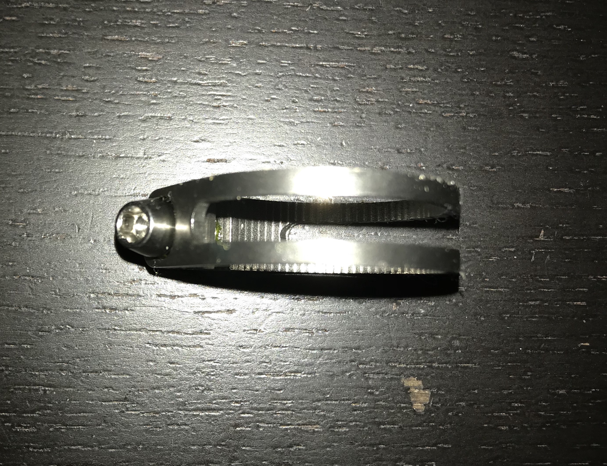
Disappointed, I quickly moved forward with a free (supposedly titanium) seatpost clamp that Waltly included pre-installed with the frame. It worked, but after a few rides it began deforming... The top and bottom lip of the seatpost began spreading apart, and it no longer looked safe to continue using. You can see the static deformity beyond the yield point of the of the clamp in the photo, and when it's tensioned up it deforms elastically even worse.
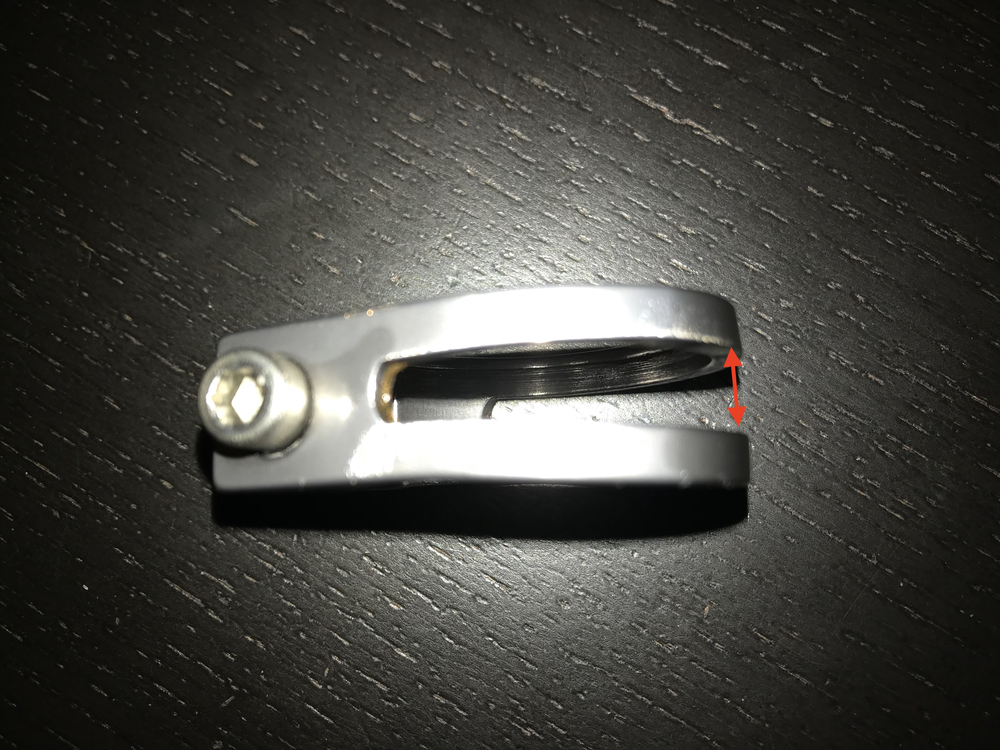
I finally decided to bite the bullet and buy something serious. $~60 on a ControlTech Timania Titanium seatpost collar, generally recognized as the most beautiful and well constructed titanium seatpost clamp on the market. There are certainly some cheaper aluminum seatpost clamps available that would do the job, but I wanted the highest strength to weigh ratio, which would only be found in this beautiful titanium component.
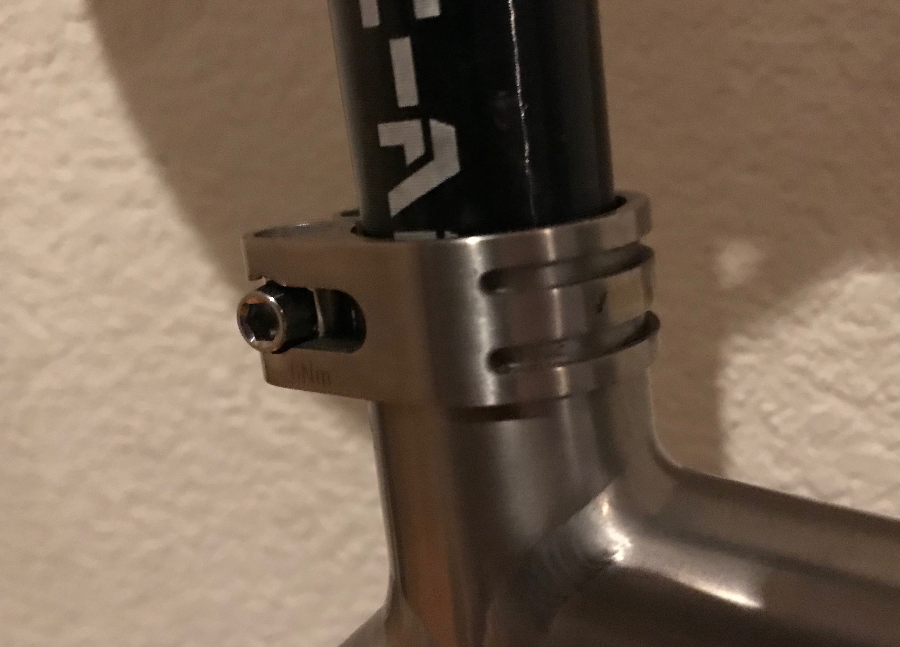
Lesson
Unfortunately, these replacement parts cost me about ~$150 more. The next time, I'm probably going to borrow these fit-critical components and really dial in my fit over a span of months before actually commiting to buying nice versions of them.
Reflection
This was an amazing build-journey. There's something about the way my mind works which is in love with planning and executing on something mechanical where small details are critical. The closest analog is building a custom computer. Whereas a computer only optimizes on 2-3 dimensions: price, performance, some aesthetics?, a custom bicycle requires optimization on vastly more dimensions: price, performance, weight, aerodynamics, durability, aesthetics, ease-of-maintenance, and all this across a vast swirling ocean of competing standards for bicycle component compatibility. I really sunk tens if not hundreds of hours researching, planning, executing, and building this bicycle, but the end result is this beautiful piece of precision engineering that frees me to explore my immediate world. Well worth it, for the type who enjoys this sort of thing.
If I were to do this again, I wouldn't change too much, which speaks to how satisfied I was with the build. Here are some ideas:
- maybe work with XACD instead. Waltly sort of kept me waiting a bit too long for comfort, and perhaps XACD could have shaved off more weight with their more experienced double-butting process. I'm still not convinced if Waltly double-butted my frame at all, 1700g for a 560mm frame seems a bit heavy.
- I would choose a higher end wheelset. One great advantage of disc brakes is that they don't wear down your rim track, which makes the more fragile carbon rims a much more sensible option, since you're not wearing them down with every brake application. I'd consider splurging a bit on a nice set of carbon November Bicycle Wheels.
- as mentioned previously, I would not have bought a stem/seatpost until I had really dialed in the fit first.
Next
Now that I've finally finished my months-long bicycle build, I'm riding it every weekend to reap what I've sown. I finished my first half-century (50 miles) last weekend, and my goal is to ride a century by the end of this year.
There's a saying that you need n+1 bikes—you always want one more than you have. I'm quite well satisfied by this bike, but that doesn't mean I'm not entertaining ideas about the next one. My next bike would need to fulfill a utility I don't have yet, which would definitely be off-road mountain biking. This probably wouldn't be a titanium one, since they only really make half-suspension Titanium frames, the full-ones are usually hardened carbon. So I'd probably shoot for a carbon frameset, and put together the other components myself :)